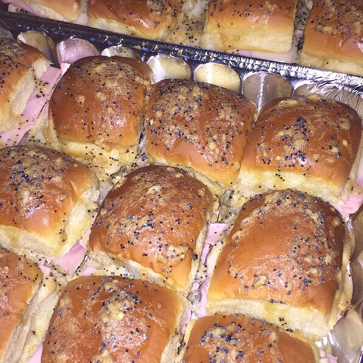

BAKED HAM AND CHEESE PARTY SANDWICHES

Description
These small, delicious sandwiches are perfect for any party. They are so good that even the pickiest of eaters will eat these.
Ingredients
- ¾ cup melted butter
- 1 ½ tablespoons Dijon mustard
- 1 ½ teaspoons Worcestershire sauce
- 1 ½ tablespoons poppy seeds
- 1 tablespoon dried minced onion
- 24 mini sandwich rolls
- 1 pound thinly sliced cooked deli ham
- 1 pound thinly sliced Swiss cheese